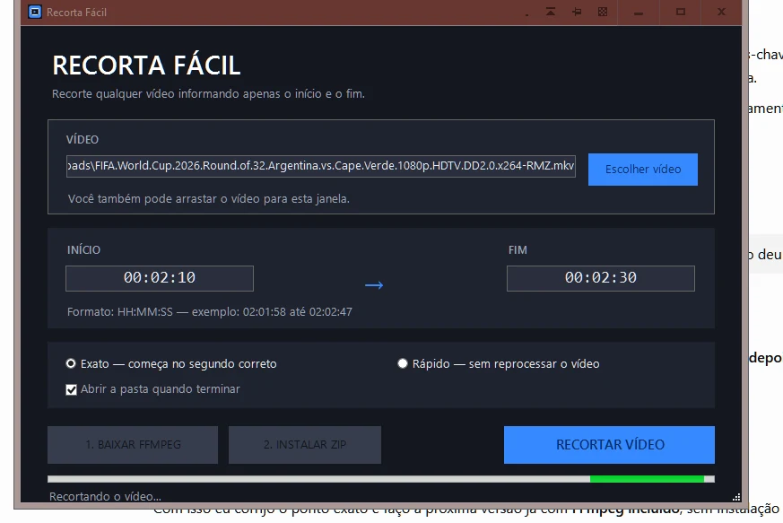

← Voltar para Bombacha Ferramentas
Windows 10 e 11
Recorta Fácil
Corte vídeos e MP3 de forma rápida, fácil e intuitiva, sem precisar abrir editores complexos.

O que ele faz
O Recorta Fácil é uma ferramenta simples e prática para recortar vídeos e arquivos de áudio MP3. Escolha o arquivo, defina exatamente o ponto de início e de término e salve apenas o trecho desejado.
Com vídeos, você pode exportar o recorte em MP4 ou extrair somente o áudio em MP3. Também é possível abrir arquivos MP3 diretamente, selecionar uma parte da música ou gravação e criar um novo arquivo MP3 somente com o trecho escolhido.
Principais recursos
- Recorte de vídeos e de arquivos MP3.
- Exportação de vídeo em MP4.
- Extração de áudio de vídeos para MP3.
- Seleção precisa do início e do fim.
- Pré-visualização do conteúdo e linha do tempo com miniaturas.
- Qualidades de MP3 em 128, 192, 256 e 320 kbps.
- Escolha da pasta de destino.
- FFmpeg integrado para os principais recursos funcionarem offline.
- Interface simples e compatibilidade com Windows 10 e Windows 11.